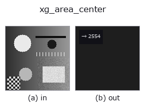

xldgeom op• 資料種類:contour → feature
• 呼叫:fullseye.apply(img, "xg_area_center", a=0.5, b=0.5)(2-D 的模型是一張圖 + 兩個純量旋鈕 a,b∈[0,1])
• HALCON 對應:area_center_points_xld(其含義與參數可參考 HALCON 手冊)

*圖為在 128×128 合成輸入上實際執行的輸出。左為輸入，右為輸出。點雲以俯視散點顯示(亮度 = z)，一維序列為折線，體資料為沿 z 的最大值投影，影片為中間影格，複數影像為振幅；無法成像的回傳值直接顯示數值。*
*旋鈕 a 不改變輸出(實測: 0.1 / 0.5 / 0.9 相同)。*
*旋鈕 b 不改變輸出(實測: 0.1 / 0.5 / 0.9 相同)。*
階段(前置運算子 → 本運算子，由左至右):
▸ xg_area_center: stages (docs site)
用鞋帶公式求 contour 的多邊形面積(絕對值求和)。
> 以下的詳細說明為原文 —— 摘要與標題已翻譯。
輪郭辞書 `{"shape": (H, W), "cs": [Nx2 の (row, col) 点列, ...]}` の各輪郭を
多角形とみなし、靴ひも公式 `0.5*|Σ(x_i*y_{i+1} - x_{i+1}*y_i)|` で面積を
求めて全輪郭の合計を返す。点が 3 個未満の輪郭は 0 として無視。`a, b` は
未使用。
返り値は `numpy.float64`(単位は画素²、正規化なし)。輪郭が無い・辞書で
ない・非有限値を含む輪郭は読み飛ばされ、合計に寄与しない(空なら 0.0)。
開いた輪郭でも「最後の点と最初の点を結んで閉じた多角形」の面積になる点に
注意(直線状の開輪郭では 0、折れ線の開輪郭でも非零になる)。絶対値を取る
ので点列の向き(時計回り/反時計回り)は結果に影響しない。自己交差する輪郭では
交差で符号が打ち消しあい、真の面積より小さく出る。名前に反して重心は
返さない(面積のみ)。同じ点集合の 2 次モーメントは `xg_moments`、bbox の
縦横比は `xg_height_width_ratio`。
• 範例資料目錄(下載 URL / 授權) —— 2-D 用 skimage.data(BSD/公有領域)加合成圖,3-D 給出真實資料源(Stanford/PDS 等)的下載 URL。
• 運算子來歷與參考文獻 —— 該運算子族所依據的研究/方法出處。
• 演算法的正典(作者・年份)與用途見上面的族使用指南。
下面的程式已確認可以執行(與圖相同的輸入)。在 Studio 說明中，此區塊會變成按鈕，可當場載入並執行。
threshold 0.50 0.50 sk_find_contours 0.50 0.50 xg_area_center 0.50 0.50
▸ Load this pipeline · Load & run
• gallery2d_geometry — py -3.11 examples/gallery2d_geometry.py
feature 作為輸入)xldgeom)xg_moments · xg_eccentricity · xg_orientation · xg_elliptic_axis · xg_height_width_ratio · xg_regress_contours · xg_clip_contours · xg_gen_polygons
*Provenance: ops.py — 2D 運算子登記表。本條目由 tools/opdocs.py md 自動產生(請勿手動編輯)。*
© 2026 Kazufumi Furuse — Fullseye operator documentation. Licensed under Apache-2.0.
{kind=link}